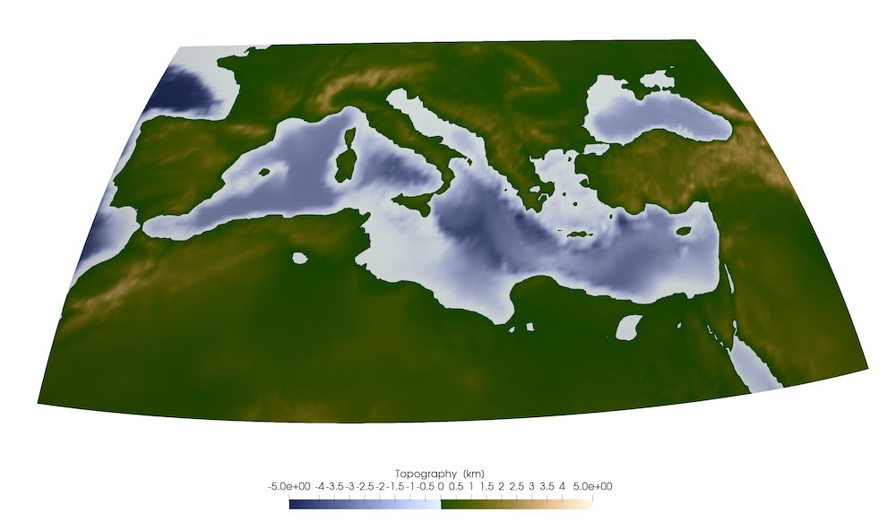
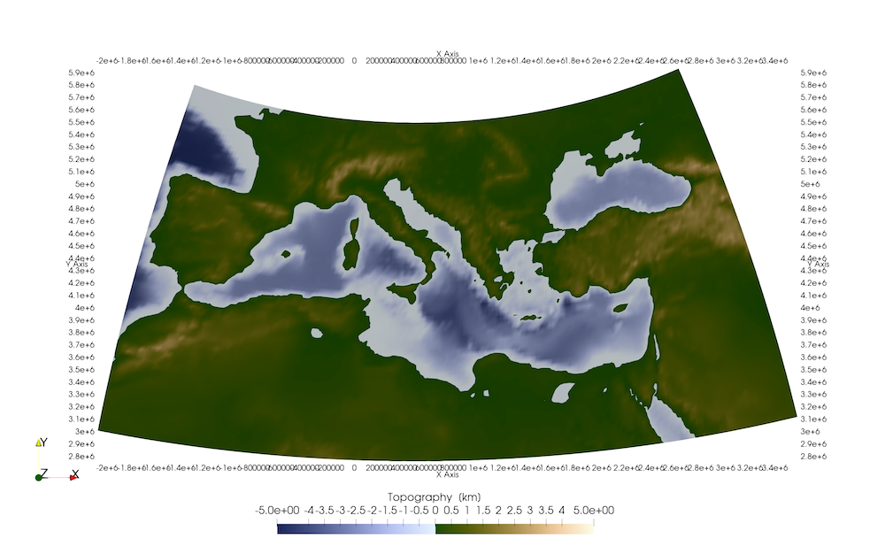
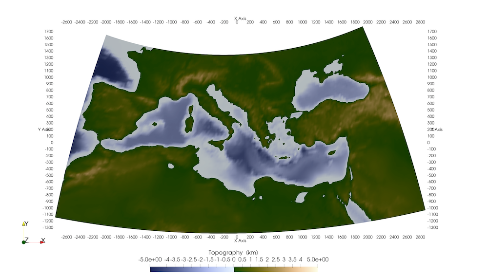
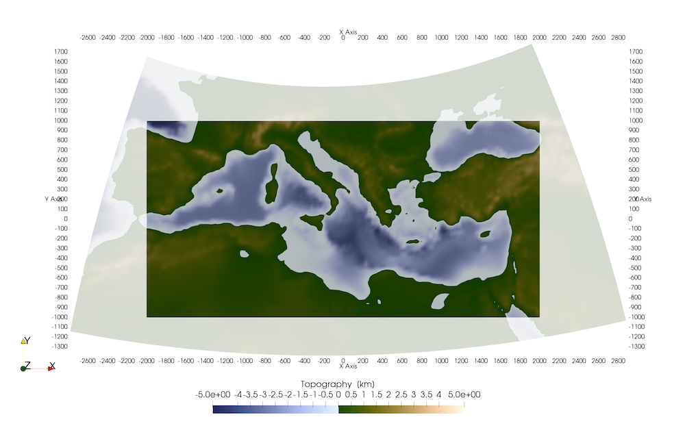

Projecting & converting data
Typically, you load a dataset by reading it into julia and either generating a GeoData structure (in case you have longitude/latitude/depth info), or as UTMData (in case the data is in UTM coordinates, which requires you to specify the zone & hemisphere).
If you write the data to Paraview, it is internally converted to a Paraview structure (which involves x,y,z Cartesian Earth-Centered-Earth-Fixed (ECEF) coordinates using the wgs84 ellipsoid).
Yet, if you do geodynamic calculations the chances are that the geodynamic code does not operate in spherical coordinates, but rather use Cartesian ones. In that case you should transfer your data to the CartData structure, which requires you to specify a ProjectionPoint that is a point on the map that will later have the coordinates (0,0) in the CartData structure.
1. Converting
Converting from one coordinate system to the other is straightforward. Let's use Europe as an example:
julia> using GeophysicalModelGenerator, GMT
julia> Topo = import_topo(lon = [-10, 45], lat=[25, 50], file="@earth_relief_20m")
GeoData
size : (165, 75, 1)
lon ϵ [ -10.0 : 44.666666666666664]
lat ϵ [ 25.0 : 49.666666666666664]
depth ϵ [ -4.9855 km : 3.123 km]
fields: (:Topography,)
julia> write_paraview(Topo,"Topo")
Saved file: Topo.vtsThe result is shown on the globe as: 
You can convert this to UTM zone as:
julia> convert(UTMData, Topo)
UTMData
UTM zone : 29-38 North
size : (165, 75, 1)
EW ϵ [ 197181.31221507967 : 769155.4572884373]
NS ϵ [ 2.7649477474783654e6 : 5.505892073781423e6]
depth ϵ [ -4985.5 m : 3123.0 m]
fields : (:Topography,)As the area is large, it covers a range of UTM zones (and every point has a UTM zone attached). Within each zone, the coordinates are approximately orthogonal. Plotting this to Paraview does not result in a sensible dataset.
Yet, what we could do instead is show all data with respect to a single UTM zone. For this, we have to select a point around which we project (in this case more or less in the center):
julia> p=ProjectionPoint(Lon=17.3, Lat=37.5)
ProjectionPoint(37.5, 17.3, 703311.4380385976, 4.152826288024972e6, 33, true)Projecting the GeoData set using this projection point is done with:
julia> convert2UTMzone(Topo,p)
UTMData
UTM zone : 33-33 North
size : (165, 75, 1)
EW ϵ [ -2.0750691599137965e6 : 3.581351293385453e6]
NS ϵ [ 2.7649477474783654e6 : 5.938114212160672e6]
depth ϵ [ -4985.5 m : 3123.0 m]
fields : (:Topography,)Whereas this is now in UTM Data (in meters), it is distorted. 
Often it is more convenient to have this in CartData, which is done in a similar manner:
julia> Topo_Cart = convert2CartData(Topo,p)
CartData
size : (165, 75, 1)
x ϵ [ -2778.3805979523936 km : 2878.039855346856 km]
y ϵ [ -1387.8785405466067 km : 1785.2879241356998 km]
z ϵ [ -4.9855 km : 3.123 km]
fields : (:Topography,)This shows that the model is ~5600 by 3000 km. 
Whereas this is ok to look at and compare with a LaMEM model setup, we cannot use it to perform internal calculations (or to generate a LaMEM model setup), because the x and y coordinates are distorted and not orthogonal.
2. Projecting data
For use with LaMEM, you would need an orthogonal Cartesian grid. From the last command above we get some idea on the area, so we can create this:
julia> Topo_Cart_orth = CartData(xyz_grid(-2000:20:2000,-1000:20:1000,0))
CartData
size : (201, 101, 1)
x ϵ [ -2000.0 km : 2000.0 km]
y ϵ [ -1000.0 km : 1000.0 km]
z ϵ [ 0.0 km : 0.0 km]
fields : (:Z,)Next, we can project the topographic data (in GeoData format) on this orthogonal grid
julia> Topo_Cart_orth = project_CartData(Topo_Cart_orth, Topo, p)
CartData
size : (201, 101, 1)
x ϵ [ -2000.0 km : 2000.0 km]
y ϵ [ -1000.0 km : 1000.0 km]
z ϵ [ -4.485650671162607 km : 2.5909655318121865 km]
fields : (:Topography,)
julia> write_paraview(Topo_Cart_orth,"Topo_Cart_orth"); So this interpolates the topographic data from the GeoData to the orthogonal Cartesian grid (which can be used with LaMEM, for example).
You can do similar projections with full 3D data sets or pointwise data.
3. List of relevant functions
GeophysicalModelGenerator.convert2CartData — Function
convert2CartData(d::UTMData, proj::ProjectionPoint)Converts a UTMData structure to a CartData structure, which essentially transfers the dimensions to km
convert2CartData(d::GeoData, proj::ProjectionPoint)Converts a GeoData structure to a CartData structure, which essentially transfers the dimensions to km
GeophysicalModelGenerator.project_CartData — Function
d_cart = project_CartData(d_cart::CartData, d::GeoData, p::ProjectionPoint)Projects all datafields from the GeoData struct d to the CartData struct d_cart, around the projection point p. d_cart must be an orthogonal cartesian grid (deformed doesn't work; use convert2CartData(d, proj), where proj is a projection point in that case).
Note:
- If
d_cartanddare horizontal surfaces (3rd dimension has size==1), it also interpolates the depth coordinate.
d_cart = project_CartData(d_cart::CartData, d::GeoData, p::ProjectionPoint)Projects all datafields from the GeoData struct d to the CartData struct d_cart, around the projection point p. d_cart must be an orthogonal cartesian grid (deformed doesn't work; use convert2CartData(d, proj), where proj is a projection point in that case).
Note:
- If
d_cartanddare horizontal surfaces (3rd dimension has size==1), it also interpolates the depth coordinate.
d_cart = project_CartData(d_cart::CartData, d::UTMData, p::ProjectionPoint)Projects all datafields from the UTMData struct d to the CartData struct d_cart, around the projection point p. d_cart must be an orthogonal cartesian grid (deformed doesn't work; use convert2CartData(d, proj), where proj is a projection point in that case).
# Note:
- If `d_cart` and `d` are horizontal surfaces (3rd dimension has size==1), it also interpolates the depth coordinate.GeophysicalModelGenerator.convert2UTMzone — Function
convert2UTMzone(d::GeoData, p::ProjectionPoint)Converts a GeoData structure to fixed UTM zone, around a given ProjectionPoint This useful to use real data as input for a cartesian geodynamic model setup (such as in LaMEM). In that case, we need to project map coordinates to cartesian coordinates. One way to do this is by using UTM coordinates. Close to the ProjectionPoint the resulting coordinates will be rectilinear and distance in meters. The map distortion becomes larger the further you are away from the center.
convert2UTMzone(d::CartData, proj::ProjectionPoint)This transfers a CartData dataset to a UTMData dataset, that has a single UTM zone. The point around which we project is ProjectionPoint